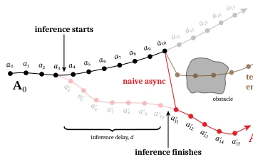
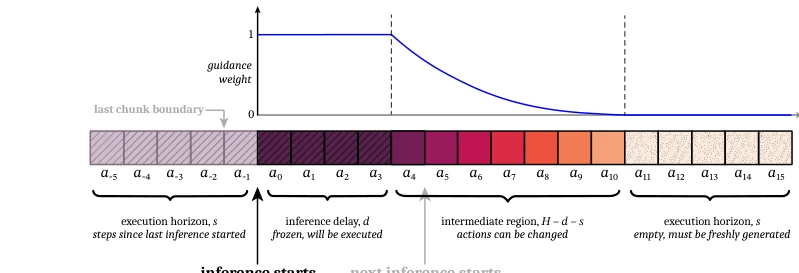
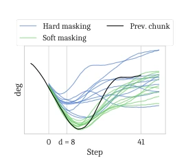
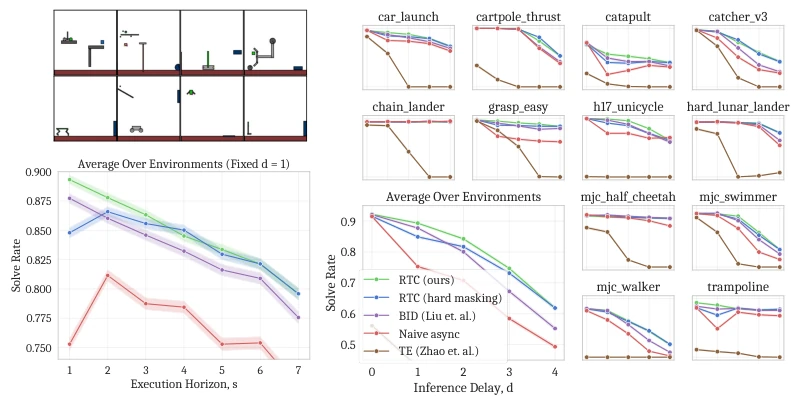
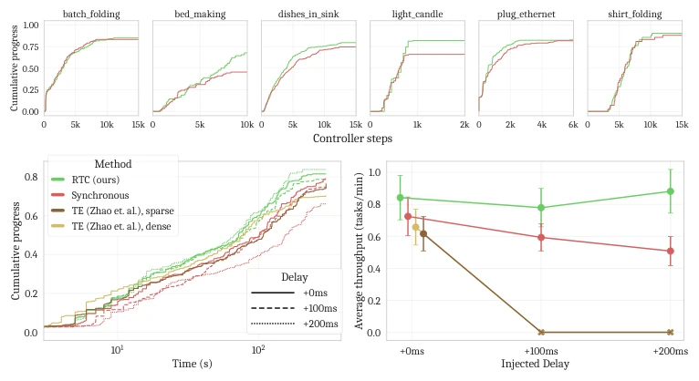
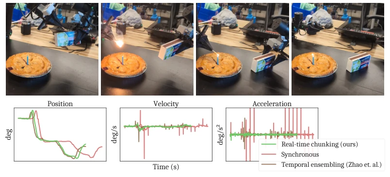
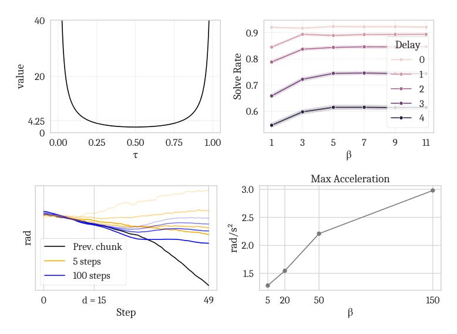
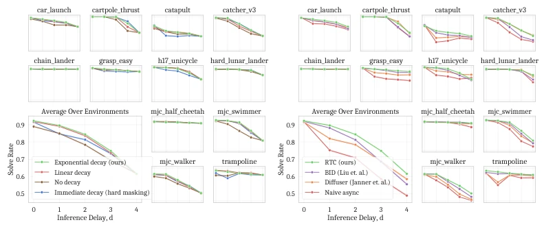

This paper equips VLA robots with the superpower of "async thinking". The authors keenly point out that slow large model inference is a fatal flaw; traditional chunking either stutters or spasms under latency. RTC treats generating new action blocks as image inpainting (inpainting), freezing the executed portion and smoothing the transition of the remaining portion. Although it incurs computational overhead, on real-world tasks such as lighting and plugging cables, it remains highly stable even with 200ms latency. However, this approach is effective only for diffusion/flow models, and inference costs indeed increase, essentially trading compute for real-time performance, remaining a challenge for edge device deployment. Furthermore, it cannot solve the problem of the model itself being slow, only making slowness less fatal, belonging to an elegant patch that "treats symptoms rather than the root cause", but wins in requiring no retraining and having low deployment cost.
Embodied AI systems must respond in real-time, but modern VLA models (e.g., π0 [5], OpenVLA [30]) have huge parameters, inference latency far exceeds the control period (Δt). Existing action chunking [68, 11] improves temporal consistency, but under latency causes mode jumps or pauses at chunk boundaries, disrupting dynamic distributions. Naive async direct switching causes action jumps (Figure 2), Temporal ensembling [68] averaging is smooth but may produce invalid actions. The authors point out that existing methods cannot guarantee continuity between chunks while maintaining reactivity, urgently needing a retraining-free async inference scheme. Especially for high-dynamic tasks, latency-induced distribution shift causes model failure, even triggering physical damage.

Figure 2: An illustration of a typical bifurcation be- tween consecutive chunks. Inference is started between timesteps 3 and 4. The original chunk that was execut- ing, {at} (black), had planned to go above the obstacle while the newly generated chunk {a′ t} (red) goes be- low the obstacle. However, {a′ t} is not available until d = 7 steps later. A naive asynchronous algorithm might jump from a10 to a′ 11, inducing a very high, out- of-distribution acceleration. Temporal ensembling [68], i.e., interpolating between chunks, reduces the acceler- ation but produces poor actions.
The RTC core models async action block generation as an inpainting problem. The pipeline includes: 1) Background thread starts inference early; 2) Determine frozen region based on latency d and execution horizon s; 3) Use Flow Matching to generate new block. Innovations lie in: a) Inference-Time Inpainting: Utilize ΠGDM gradient correction, enforce compatibility between new block and old block overlap (Eq. 2). b) Soft Masking: No hard truncation, but assign exponential decay weights to overlap region (Eq. 5), let policy gradually transition from old block to new block, avoid policy jump. c) System Architecture: Algorithm 1 manages shared state, dynamically estimates latency d, ensures actions always available. This method requires no training modification, directly applied to diffusion or flow policies. By computing vector-Jacobian product via backpropagation, achieves fine-grained guidance on generation process, ensuring smoothness and continuity of action generation.

Figure 3: A diagram illustrating how action generation attends to the previous action chunk in real-time chunking. If inference starts after the execution of a−1 and the inference delay is d = 4, then the newly generated chunk will not be available until after a3 is consumed. Therefore, a0:3 are “frozen” and are attended to with a full guidance weight of 1. In the intermediate region, a4:10, actions from the previous chunk are available but may be updated, since inference will have finished before a4 is needed. This region is attended to with an exponentially decreasing guidance weight. Finally, the last s = 5 actions are beyond the end of the previous chunk, and need to be freshly generated. The execution horizon, s, is a hyperparameter constrained by d ≤s ≤H −d.

Figure 4: A comparison of naive in- painting (hard masking) and our pro- posed soft masking method: note that hard masking does not match the frozen region very well and produces faster changes in direction.
Simulation tested on 12 dynamic tasks in Kinetix [43], comparing Naive async, BID [39], TE [68]. Results show RTC is most robust to latency (Figure 5). Real-world evaluation using π0.5 [24] on 6 dual-arm tasks (e.g., lighting, plugging network cable). Metrics are task throughput (speed + performance). RTC still runs under injected +200ms latency, while TE stops due to oscillation triggering protection (Figure 6). Ablation experiments show Soft Masking outperforms Hard Masking. RTC has significantly higher success rate on precise tasks (lighting), and execution speed is 20% faster than synchronous inference. This proves async execution not only solves latency problem but also improves overall efficiency, providing new ideas for large-scale VLA deployment.

Figure 5: Top left: Kinetix environments; each involves getting a green object on the left to touch a blue one on the right. Bottom left: Execution horizon vs. solve rate with a fixed inference delay of 1. Only RTC and BID take full advantage of faster updates, showing strictly increasing performance with decreasing execution horizon. Right: Inference delay vs. solve rate with a fixed execution horizon of s = max(d, 1). RTC outperforms all baselines. Furthermore, soft masking (Sec. 3.2) improves performance at lower inference delays and execution horizons. Each data point represents 2048 trials, and 95% Wilson score intervals are shaded in.

Figure 6: Top: Controller steps (equivalent to elapsed time with inference pauses removed multiplied by 50Hz) vs. cumulative progress for each task, aggregated across all delays. Progress is measured in discrete steps corresponding to the subsections of each task. Left: Time (including inference pauses) vs. cumulative progress aggregated across all tasks. The x-axis is log scale to better show progress during both short and long-horizon tasks. Right: Inference delay vs. average throughput, defined as the proportion of task completed divided by duration of episode averaged over episodes. Error bars are ±1 SEM. Average throughput gives a balanced view of both speed and performance for each method. Neither TE variant can run at +100 or +200ms of injected latency, causing such high oscillation
其他图片Other Figures

Figure 1: Top: Real-time chunking (RTC) enables the robot to perform highly dexterous and dynamic tasks, such as lighting a match—even in the presence of inference delays in excess of 300 milliseconds, corresponding to more than 30% of the model’s prediction horizon. Bottom: RTC performs the same robot motion 20% faster than synchronous inference [5, 30, 8, 24, 31, 59], and smoother than all competing methods, including temporal ensembling [68]. The shown positions, velocities, and accelerations correspond to the shoulder joint of one arm, and are taken from the first 10 seconds of a real autonomous match-lighting rollout.

Figure 7: Top left: The graph of the value 1−τ

Figure 8: Left: Simulated ablation over different schedules for soft masking weights (Eq. 5). Exponential decay performs the best overall, although linear decay is very close behind. Right: Comparison with the inpainting algorithm from Diffuser [26], which overwrites a portion of the action chunk with the desired actions at each denoising step. While this simpler (and cheaper) inpainting method still provides some benefit, it is outperformed by our guidance-based approach.